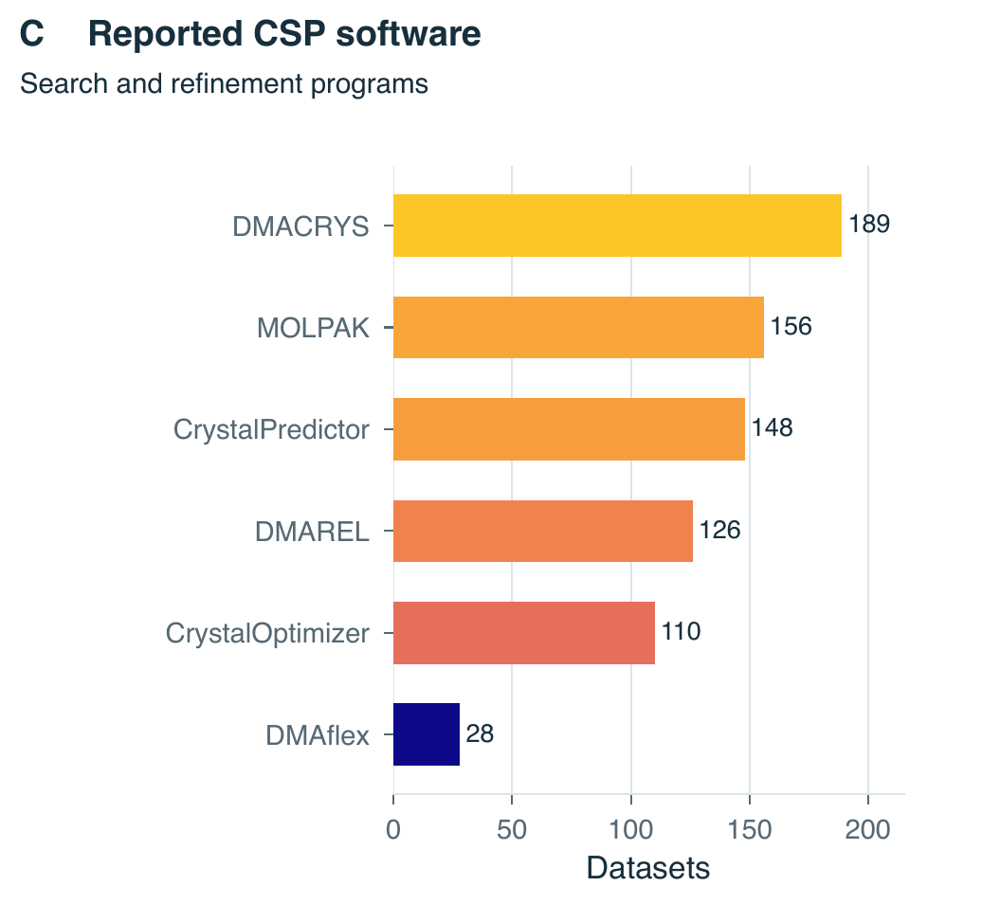
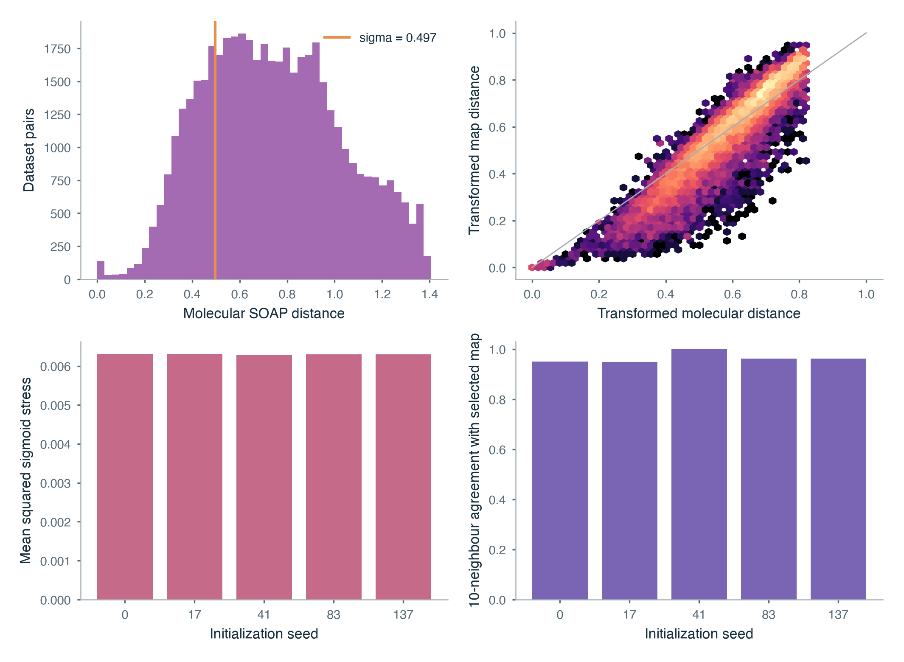
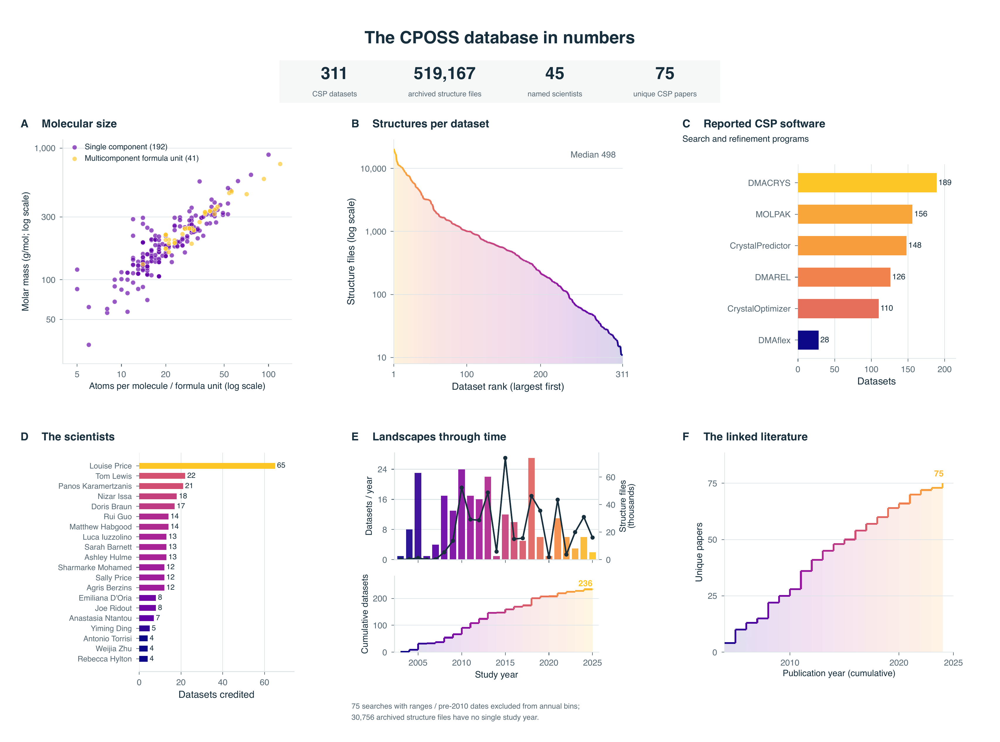
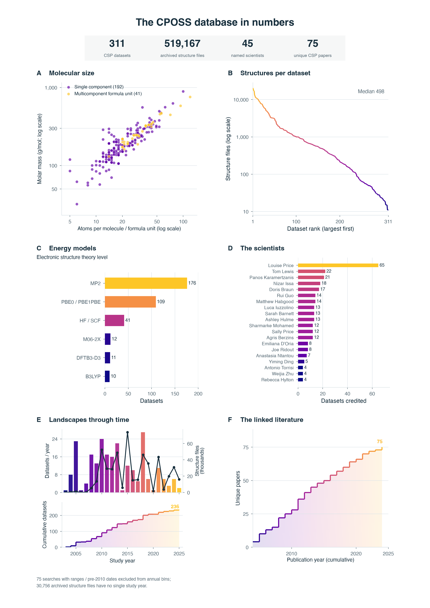

CPOSS and OMC25: chemical content
Elemental prevalence, molecular atom counts and molar-mass distributions for 190 verified single-component CPOSS systems and 44,403 OMC25 training molecular records. Every molecular record receives equal weight.
The CPOSS dataset
The figures, statistics and source data behind the landscapes. Explore molecular diversity, the scope of the archive, and comparisons with OMC25 and the Cambridge Structural Database.
These analyses follow 311 documented searches on 235 molecular-system pages. The Navigator catalogue contains 315 available JSON files, including eight unlinked or alternate exports; four documented searches have no available visualization but retain intact archives. The 519,167-file total counts model-specific RES records, with no geometric deduplication.
Expand a figure to inspect it, or download the original image, vector PDF, caption and underlying tables. Earlier exports retain their original scope.
Elemental prevalence, molecular atom counts and molar-mass distributions for 190 verified single-component CPOSS systems and 44,403 OMC25 training molecular records. Every molecular record receives equal weight.

Archive-linked CPOSS density records compared with histogram references recovered from the OMC25 paper. The shared 0.8–2.4 g/cm³ window and a system-weighted sensitivity curve make the counting basis explicit.

A molecular SOAP sketch-map of 308 documented searches. Marker area scales with the square root of archived-file count; colour shows representative-component molar mass. Multicomponent systems use their largest non-water component.

The 44 verified salts, hydrates, solvates and co-crystals are shown separately from the single-component comparison. Atom counts and masses retain all components and stoichiometry of each formula unit.

Explicit program mentions across 311 searches: each search counts once per program family. Versions are pooled and program categories overlap. This is the software panel adopted for the wide overview.

Distance preservation, local-neighbour retention, optimization and sensitivity diagnostics for the molecular embedding. The full run and stability statistics are available as CSV tables.

The six-panel overview of molecular size, archived structures, reported software, scientist credits, study dates and linked literature, arranged in three columns and two rows.
Its molecular panel predates the reconciled formula audit. Use the current chemistry statistics and comparison above for composition and component counts.

The original portrait arrangement of the database overview. Retained alongside the wide version so figures from the earlier analysis remain accessible.
This export uses earlier formula metadata and a molecular-method panel. The reconciled chemistry and reported-software results are presented separately on this page.
Archive totals, source coverage, study history and the people and methods named in the database.
The middle half of searches contain 113.0–1,435.5 archived files. All 311 searches have complete archive counts.
| Measurement | Available | Definition |
|---|---|---|
| Archived RES coordinate files | 519,167 | All 509 documented model archives; models counted separately |
| Linked visualization entries | 155,824 | Available Chemiscope exports; can be subsets |
| Archive coverage | 311 / 311 searches | Complete file counts for every documented search |
| Single-component systems | 191 metadata / 190 verified | Tetrachlorobenzene remains formula-only |
| Multicomponent systems | 44 / 44 verified | Complete salts, co-crystals, hydrates and solvates |
| Dated searches | 236 / 311 | Single unambiguous study year; release years unavailable |
| Named credits | 286 / 311 searches | 45 scientists; credits can overlap |
| Searches with a linked CSP paper | 192 / 311 | A missing link does not establish that no paper exists |
Visualization entries, spreadsheet rows and archive files describe overlapping scopes and are not added together.
The dated searches contain 488,411 archived files; 30,756 files fall outside the dated series. Study dates do not measure database release or deposition.
| Study year | Searches | Archived files | Cumulative searches |
|---|---|---|---|
| 2003 | 1 | 22 | 1 |
| 2004 | 8 | 357 | 9 |
| 2005 | 23 | 1239 | 32 |
| 2006 | 1 | 79 | 33 |
| 2007 | 4 | 213 | 37 |
| 2008 | 17 | 5388 | 54 |
| 2009 | 13 | 13720 | 67 |
| 2010 | 24 | 52331 | 91 |
| 2011 | 17 | 29227 | 108 |
| 2012 | 16 | 28630 | 124 |
| 2013 | 22 | 48793 | 146 |
| 2014 | 1 | 5855 | 147 |
| 2015 | 12 | 73893 | 159 |
| 2016 | 10 | 15025 | 169 |
| 2017 | 5 | 15605 | 174 |
| 2018 | 27 | 46282 | 201 |
| 2019 | 6 | 35580 | 207 |
| 2020 | 1 | 1827 | 208 |
| 2021 | 11 | 43555 | 219 |
| 2022 | 6 | 3749 | 225 |
| 2023 | 3 | 19990 | 228 |
| 2024 | 6 | 31003 | 234 |
| 2025 | 2 | 16048 | 236 |
| Publication year | New linked CSP papers | Cumulative CSP papers |
|---|---|---|
| 2004 | 4 | 4 |
| 2005 | 6 | 10 |
| 2006 | 3 | 13 |
| 2007 | 2 | 15 |
| 2008 | 7 | 22 |
| 2009 | 3 | 25 |
| 2010 | 3 | 28 |
| 2011 | 8 | 36 |
| 2012 | 5 | 41 |
| 2013 | 4 | 45 |
| 2014 | 3 | 48 |
| 2015 | 2 | 50 |
| 2016 | 4 | 54 |
| 2017 | 3 | 57 |
| 2018 | 3 | 60 |
| 2019 | 4 | 64 |
| 2020 | 2 | 66 |
| 2021 | 4 | 70 |
| 2022 | 2 | 72 |
| 2023 | 1 | 73 |
| 2024 | 2 | 75 |
Each search counts at most once per program family. Versions are pooled; categories overlap. Only explicit software mentions are counted.
Download software counts ↓| Category | Searches |
|---|---|
| FIT | 281 |
| Williams | 35 |
| Day / Rice | 22 |
| Non-empirical / SAPT | 4 |
| Custom Delaware | 1 |
Categories overlap; each search counts at most once per category.
| Category | Searches |
|---|---|
| MP2 | 176 |
| PBE0 / PBE1PBE | 109 |
| HF / SCF | 41 |
| M06-2X | 12 |
| DFTB3-D3 | 11 |
| B3LYP | 10 |
| B3PW91 | 3 |
| CCSD | 2 |
| PBE | 2 |
Categories overlap; each search counts at most once per category.
Molecular electronic-structure labels are not counts of periodic-DFT crystal landscapes.
286 searches name at least one scientist. Credits overlap and follow the source Scientist field; paper authorship is recorded separately.
| Named scientist | Credited searches |
|---|---|
| Louise Price | 65 |
| Tom Lewis | 22 |
| Panos Karamertzanis | 21 |
| Nizar Issa | 18 |
| Doris Braun | 17 |
| Rui Guo | 14 |
| Matthew Habgood | 14 |
| Luca Iuzzolino | 13 |
| Sarah Barnett | 13 |
| Ashley Hulme | 13 |
| Sharmarke Mohamed | 12 |
| Sally Price | 12 |
| Agris Berzins | 12 |
| Emiliana D'Oria | 8 |
| Joe Ridout | 8 |
| Anastasia Ntantou | 7 |
| Yiming Ding | 5 |
| Antonio Torrisi | 4 |
| Weijia Zhu | 4 |
| Rebecca Hylton | 4 |
| Harriott Nowell | 3 |
| Salima Ismail | 3 |
| Ogaga Uzoh | 3 |
| Gareth Welch | 2 |
| Rona Watson | 2 |
| Alston Misquitta | 2 |
| William Wood | 2 |
| Dave Case | 2 |
| Alex Aina | 2 |
| Einat Schur | 2 |
| Juliette Pradon | 2 |
| Andrei Kazantsev | 1 |
| Tinoziva Sango | 1 |
| Stephen Tendyra | 1 |
| Shihao Ying | 1 |
| Helen Tsui | 1 |
| Ricarda Duss | 1 |
| Binal Patel | 1 |
| Isaac Sugden | 1 |
| Eric Stevenson | 1 |
| Bob Lancaster | 1 |
| Carole Ouvrard | 1 |
| Michael Lawrence | 1 |
| Merina Corpinot | 1 |
| Pinky Pridhanani-Jethani | 1 |
192 searches link a qualifying CSP paper. References are deduplicated by DOI or canonical URL; experimental-context references are recorded separately.
Equal weight per documented molecular record: 190 verified single-component CPOSS systems and 44,403 OMC25 training molecular records.
| Variable | CPOSS median (range) | OMC25 median (range) |
|---|---|---|
| Atoms per molecule | 18 (5–100) | 39 (4–164) |
| Non-H atoms per molecule | 12 (2–48) | 21 (2–92) |
| Molar mass (g/mol) | 179.69 (32.04–890.88) | 312.15 (30.03–1,386.32) |
The observed CPOSS single-component size and mass ranges lie within OMC25’s ranges. Range overlap does not establish matching chemical environments or crystal packings.
The other 44 verified CPOSS systems are complete multicomponent formula units. They retain coformers, counterions and water; their masses are not single-molecule masses. One additional single-component system remains in the formula-only sensitivity population.
Molar masses use one frozen average-atomic-weight convention. Original OMC25 masses are retained; harmonization changes a training mass by at most 0.032 g/mol.
| Element | CPOSS: percentage (count/N) | OMC25: percentage (count/N) |
|---|---|---|
| H | 98.42% (187/190) | 99.65% (44,248/44,403) |
| B | 0.00% (0/190) | 0.80% (354/44,403) |
| C | 100.00% (190/190) | 99.98% (44,393/44,403) |
| N | 71.58% (136/190) | 65.36% (29,021/44,403) |
| O | 78.95% (150/190) | 81.88% (36,356/44,403) |
| F | 8.42% (16/190) | 6.73% (2,989/44,403) |
| Si | 0.53% (1/190) | 4.18% (1,855/44,403) |
| P | 0.00% (0/190) | 5.50% (2,444/44,403) |
| S | 6.84% (13/190) | 24.82% (11,019/44,403) |
| Cl | 19.47% (37/190) | 11.65% (5,175/44,403) |
| Cu | 0.53% (1/190) | 0.00% (0/44,403) |
| Br | 1.58% (3/190) | 7.31% (3,245/44,403) |
| I | 1.05% (2/190) | 1.42% (630/44,403) |
A record contributes once to every element it contains. These overlapping percentages do not sum to 100%. Pooled atomic fractions are available as a separate CSV. Cu occurs in CPOSS and is outside the OMC25 elemental vocabulary.
| Population | Variable | N | Min | Q1 | Median | Q3 | Max | Mean |
|---|---|---|---|---|---|---|---|---|
| CPOSS: verified single-component | All atoms | 190 | 5.00 | 14.00 | 18.00 | 28.75 | 100.00 | 22.76 |
| CPOSS: verified single-component | Non-H atoms | 190 | 2.00 | 9.25 | 12.00 | 17.00 | 48.00 | 13.85 |
| CPOSS: verified single-component | Mass (g/mol) | 190 | 32.04 | 129.34 | 179.69 | 246.56 | 890.88 | 201.41 |
| OMC25: training molecules | All atoms | 44,403 | 4.00 | 31.00 | 39.00 | 48.00 | 164.00 | 41.54 |
| OMC25: training molecules | Non-H atoms | 44,403 | 2.00 | 17.00 | 21.00 | 26.00 | 92.00 | 22.65 |
| OMC25: training molecules | Mass (g/mol) | 44,403 | 30.03 | 252.89 | 312.15 | 386.62 | 1,386.32 | 329.98 |
| OMC25: training molecules | Source-reported mass (g/mol) | 44,403 | 30.03 | 252.89 | 312.15 | 386.61 | 1,386.29 | 329.97 |
| CPOSS: multicomponent formula units | All atoms | 44 | 14.00 | 23.00 | 31.00 | 40.75 | 120.00 | 36.27 |
| CPOSS: multicomponent formula units | Non-H atoms | 44 | 9.00 | 14.00 | 18.00 | 23.25 | 56.00 | 20.52 |
| CPOSS: multicomponent formula units | Mass (g/mol) | 44 | 131.09 | 212.11 | 245.26 | 332.32 | 757.07 | 288.46 |
| CPOSS: formula-only sensitivity | All atoms | 191 | 5.00 | 14.00 | 18.00 | 28.50 | 100.00 | 22.70 |
| CPOSS: formula-only sensitivity | Non-H atoms | 191 | 2.00 | 9.50 | 12.00 | 17.00 | 48.00 | 13.83 |
| CPOSS: formula-only sensitivity | Mass (g/mol) | 191 | 32.04 | 129.59 | 180.16 | 244.80 | 890.88 | 201.49 |
Quartiles use linear interpolation. The formula-only sensitivity population includes tetrachlorobenzene; the principal comparison excludes it because no valid coordinate element table was available.
CPOSS source-reported densities compared with the last-frame OMC25 and organic CSD references from Figure 3a of the OMC25 paper.
| Population | Median | Q1 | Q3 | Mean |
|---|---|---|---|---|
| CPOSS: per record | 1.35 | 1.24 | 1.51 | 1.38 |
| CPOSS: equal weight per system | 1.38 | 1.25 | 1.62 | 1.43 |
| OMC25: last frames (≈) | 1.29 | 1.21 | 1.39 | 1.31 |
| Organic CSD reference (≈) | 1.34 | 1.24 | 1.46 | 1.38 |
All values are in g/cm³ and conditional on the shared interval. OMC25 and CSD values are approximate histogram recoveries, not statistics calculated from raw crystal records.
113,203 records from 257 searches lie in the comparison window. 0.89% lie outside it and remain in the data tables.
Each search contributes one archive-linked density column. The dashed curve gives each molecular system equal total weight, with equal weights for its searches. This tests sensitivity to the different numbers of stored candidates in each landscape.
This visualization subset is not a density census of all 519,167 archived files. Density agreement does not establish equal chemical, packing or stability coverage.
| Population | Scope | Records | Min | Q1 | Median | Q3 | Max | Mean |
|---|---|---|---|---|---|---|---|---|
| CPOSS single records | all available | 114,222 | 0.002 | 1.234 | 1.348 | 1.514 | 2.517 | 1.374 |
| CPOSS single records | shared window | 113,203 | 0.802 | 1.236 | 1.349 | 1.515 | 2.400 | 1.380 |
| CPOSS single system balanced | all available | 114,222 | 0.002 | 1.251 | 1.385 | 1.618 | 2.517 | 1.430 |
| CPOSS single system balanced | shared window | 113,203 | 0.802 | 1.251 | 1.385 | 1.616 | 2.400 | 1.429 |
| CPOSS multicomponent records | all available | 29,065 | 0.028 | 1.291 | 1.351 | 1.523 | 1.778 | 1.365 |
| CPOSS multicomponent records | shared window | 28,344 | 0.804 | 1.297 | 1.354 | 1.530 | 1.778 | 1.389 |
| CSD organic | shared window | — | — | 1.240 | 1.336 | 1.463 | — | 1.376 |
| OMC25 generated first frames | shared window | — | — | 0.923 | 0.987 | 1.069 | — | 1.013 |
| OMC25 last frames | shared window | — | — | 1.211 | 1.293 | 1.389 | — | 1.315 |
| OMC25 rigid press first frames | shared window | — | — | 1.299 | 1.417 | 1.561 | — | 1.448 |
Very low positive source values are retained without automatic repair. Blank reference counts and extremes are unavailable, not zero. Reference quantiles assume uniform probability within recovered histogram bins.
One reconstructed molecular representative per search, compared through local atomic environments using SOAP descriptors and sketch-map.
519,004 of 519,167 archived files are represented. Three searches covering 163 files are excluded because their source element tables are contradictory.
Neighbour retention is 59.1%. Five initializations and two switching-distance sensitivity checks are supplied.
Composition and local molecular geometry, using equal search weights. The largest non-water component represents a multicomponent system. Marker area scales as the square root of archived-file count.
Crystal packing, complete coformer stoichiometry and enantiomer separation are outside this representation.
These are the selected dataset representatives. Experimental references establish the compounds; the displayed geometries are not asserted experimental conformers.
Inspect all 311 documented searches, their reconciled formulas, archive counts, credits and study dates. Open an available landscape directly in the Navigator.
311 documented searches
| Molecule / search | Reconciled formula | Models | Archived files | Named scientists | Study date | Explore |
|---|---|---|---|---|---|---|
| IbuprofenIbuprofenA | C13H18O2 | 4 | 20,408 | Louise Price | 2019 | Open landscape ↗ Molecule page ↗ |
| Blind Test XXXII (JEKVII)BTXXXIIA | C29H32F2N8O4S | 2 | 18,805 | Louise Price | August 2021 | Open landscape ↗ Molecule page ↗ |
| 3-Chloromandelic AcidChloromandelicAcidA | C8H7ClO3 | 3 | 17,214 | Rebecca Hylton | 2015 | Open landscape ↗ Molecule page ↗ |
| beta-Resorcylic Acid MonohydratebResorcylicAcidMonohydrateA | C7H8O5 | 3 | 16,899 | Doris Braun | 2011 | Open landscape ↗ Molecule page ↗ |
| Gallic Acid Monohydrate (Blind Test XXI)GallicAcidMHB | C7H8O6 | 2 | 13,180 | Doris Braun | 2010 | Open landscape ↗ Molecule page ↗ |
| Blind Test XXVIII (OJIGOG)BTXXVIIIA | C26H22Cl2CuN2 | 2 | 12,468 | Louise Price; Rui Guo | October 2021 | Open landscape ↗ Molecule page ↗ |
| Blind Test XXIV (XAFQON)BTXXIVA | C4H9ClN2O3S | 7 | 11,307 | Rui Guo | 2015 | Open landscape ↗ Molecule page ↗ |
| 2,4-dichloronitrobenzene24-dichloronitrobenzeneB | C6H3Cl2NO2 | 3 | 11,245 | Louise Price | January 2024 | Open landscape ↗ Molecule page ↗ |
| Gallic Acid Monohydrate (Blind Test XXI)GallicAcidMHA | C7H8O6 | 2 | 10,993 | Doris Braun | 2010 | Open landscape ↗ Molecule page ↗ |
| DiclofenacDiclofenacA | C14H11Cl2NO2 | 4 | 10,898 | Louise Price | 2017 | Open landscape ↗ Molecule page ↗ |
| AmoxapineAmoxapineB | C17H16ClN3O | 2 | 10,435 | Louise Price | 2015 | Open landscape ↗ Molecule page ↗ |
| SulfamerazineSulfamerazineA | C11H12N4O2S | 2 | 10,416 | William Wood | April 2023 | Open landscape ↗ Molecule page ↗ |
| LamotrigineLamotrigineA | C9H7Cl2N5 | 2 | 10,169 | Louise Price | 2018 | Open landscape ↗ Molecule page ↗ |
| Blind Test XXV Cocrystal (XAFQAZ)BTXXVCA | C24H22N4O6 | 3 | 9,560 | Rona Watson | 2015 | Open landscape ↗ Molecule page ↗ |
| ClozapineClozapineB | C18H19ClN4 | 2 | 9,338 | Louise Price | 2025 | Open landscape ↗ Molecule page ↗ |
| SulfadiazineSulfadiazineA | C10H10N4O2S | 2 | 8,704 | William Wood | March 2023 | Open landscape ↗ Molecule page ↗ |
| TazofeloneTazofeloneA | C18H27NO2S | 2 | 8,666 | Louise Price | 2013 | Open landscape ↗ Molecule page ↗ |
| TrifluoroethanolTrifluoroethanolB | C2H3F3O | 1 | 8,159 | Louise Price | 2019 | Open landscape ↗ Molecule page ↗ |
| 3-fluorotoluene3-fluorotolueneA | C7H7F | 6 | 7,728 | Joe Ridout; Louise Price | 2013 | Open landscape ↗ Molecule page ↗ |
| Blind Test XXVI (XAFQIH)BTXXVIA | C34H22Cl2N2O2 | 1 | 7,726 | Luca Iuzzolino | 2015 | Open landscape ↗ Molecule page ↗ |
| Blind Test XXII (NACJAF)BTXXIIA | C8N4S3 | 7 | 7,690 | Rebecca Hylton | 2015 | Open landscape ↗ Molecule page ↗ |
| Blind Test XVIII (OBEQET)BTXVIIIB | C9H7ClN2O3S | 2 | 7,561 | Louise Price | 2010 | Open landscape ↗ Molecule page ↗ |
| 4-fluorotoluene4-fluorotolueneA | C7H7F | 5 | 7,262 | Joe Ridout; Louise Price | 2013 | Open landscape ↗ Molecule page ↗ |
| MetacetamolMetacetamolA | C8H9NO2 | 2 | 6,710 | Shihao Ying | August 2025 | Open landscape ↗ Molecule page ↗ |
| Dicyanobenzene Succinic Acid cocrystalDicyanobenzene-SuccinicA | C12H10N2O4 | 2 | 6,404 | Nizar Issa; Panos Karamertzanis | 2012 | Open landscape ↗ Molecule page ↗ |
| Gentisic AcidGentisicAcidB | C7H6O4 | 1 | 6,233 | Doris Braun | 2010 | Open landscape ↗ Molecule page ↗ |
| GalunisertibGalunisertibA | C22H19N5O | 4 | 5,916 | Louise Price | 2015-2019 | Open landscape ↗ Molecule page ↗ |
| LactideLactideA | C6H8O4 | 4 | 5,855 | Rebecca Hylton | 2014 | Open landscape ↗ Molecule page ↗ |
| LY2806920LY2806920A | C32H42N6O6 | 3 | 5,761 | Doris Braun | 2012 | Open landscape ↗ Molecule page ↗ |
| Caffeine Paracetamol cocrystalCaffeineParacetamolA | C16H19N5O4 | 1 | 5,596 | Louise Price | 2019 | Open landscape ↗ Molecule page ↗ |
| 2,5-dichloronitrobenzene25-dichloronitrobenzeneB | C6H3Cl2NO2 | 3 | 5,004 | Louise Price | January 2024 | Open landscape ↗ Molecule page ↗ |
| ChalconeChalconeA | C15H12O | 1 | 4,988 | Louise Price | 2018 | Open landscape ↗ Molecule page ↗ |
| Blind Test XXIII (XAFPAY)BXXIIIA | C21H17Cl2NO2 | 8 | 4,941 | Louise Price | 2015 | Open landscape ↗ Molecule page ↗ |
| NaproxenNaproxenA | C14H14O3 | 2 | 4,701 | Louise Price | June 2024 | Open landscape ↗ Molecule page ↗ |
| Blind Test XXXI (ZEHFUR)BTXXXIA | C12H12F3NO3S | 1 | 4,601 | Sally Price | September 2021 | Open landscape ↗ Molecule page ↗ |
| LoxapineLoxapineB | C18H18ClN3O | 2 | 4,434 | Louise Price | 2016 | Open landscape ↗ Molecule page ↗ |
| 2-fluorotoluene2-fluorotolueneA | C7H7F | 6 | 4,259 | Joe Ridout; Louise Price | 2013 | Open landscape ↗ Molecule page ↗ |
| 2,3-dichloronitrobenzene23-dichloronitrobenzeneB | C6H3Cl2NO2 | 3 | 4,091 | Louise Price | January 2024 | Open landscape ↗ Molecule page ↗ |
| NitrofurantoinNitrofurantoinA | C8H6N4O5 | 1 | 3,727 | Agris Berzins | 2018 | Open landscape ↗ Molecule page ↗ |
| Succinic AcidSuccinicAcidA | C4H6O4 | 3 | 3,706 | Louise Price | 2018 | Open landscape ↗ Molecule page ↗ |
| IndomethacinIndomethacinA | C19H16ClNO4 | 3 | 3,348 | Doris Braun | 2013 | Open landscape ↗ Molecule page ↗ |
| Succinic AcidSuccinicAcidB | C4H6O4 | 3 | 3,285 | Louise Price | 2018 | Open landscape ↗ Molecule page ↗ |
| 3,5-dichloronitrobenzene35-dichloronitrobenzeneB | C6H3Cl2NO2 | 3 | 3,252 | Louise Price | January 2024 | Open landscape ↗ Molecule page ↗ |
| Tolfenamic AcidTolfenamicAcidB | C14H12ClNO2 | 4 | 3,226 | Louise Price | 2016 | Open landscape ↗ Molecule page ↗ |
| Naphthyridinium Fumarate (Blind Test XIX)BTXIXA | C12H10N2O4 | 2 | 3,225 | Sharmarke Mohamed | 2010 | Open landscape ↗ Molecule page ↗ |
| Blind Test XXVI (XAFQIH)BTXXVIB | C34H22Cl2N2O2 | 4 | 3,207 | Luca Iuzzolino | 2015 | Open landscape ↗ Molecule page ↗ |
| EstradiolEstradiolA | C18H24O2 | 1 | 3,207 | Eric Stevenson | 2017 | Open landscape ↗ Molecule page ↗ |
| Bipyridine Succinic Acid cocrystalBipy-SuccinicA | C14H14N2O4 | 2 | 3,169 | Nizar Issa; Panos Karamertzanis | 2012 | Open landscape ↗ Molecule page ↗ |
| Nitrophenylacetic Acid Aminobenzoic Acid cocrystalNitrophenyl-AminobenzoicA | C15H14N2O6 | 3 | 3,167 | Nizar Issa; Panos Karamertzanis | 2009 | Open landscape ↗ Molecule page ↗ |
| OlanzapineOlanzapineA | C17H20N4S | 3 | 3,080 | Louise Price | 2013 | Open landscape ↗ Molecule page ↗ |
| Succinic AcidSuccinicAcidD | C4H6O4 | 2 | 3,013 | Nizar Issa | 2012 | Open landscape ↗ Molecule page ↗ |
| 3,4-dichloronitrobenzene34-dichloronitrobenzeneB | C6H3Cl2NO2 | 3 | 2,710 | Louise Price | January 2024 | Open landscape ↗ Molecule page ↗ |
| PhenanthrenolPhenanthrenolA | C14H10O | 2 | 2,701 | Panos Karamertzanis | 2009 | Open landscape ↗ Molecule page ↗ |
| Mefenamic AcidMefenamicAcidA | C15H15NO2 | 3 | 2,545 | Rona Watson | 2013 | Open landscape ↗ Molecule page ↗ |
| LY2624803LY2624803A | C22H25N3O3 | 3 | 2,230 | Doris Braun | 2012 | Open landscape ↗ Molecule page ↗ |
| Tetrazol PyrimidineTetrazolPyrimidineA | C7H4N14 | 3 | 2,136 | Luca Iuzzolino | 2016 | Open landscape ↗ Molecule page ↗ |
| Methyl Anthranilate (Blind Test XXIX)BTXXIXA | C8H9NO2 | 1 | 2,094 | Sally Price | January 2021 | Open landscape ↗ Molecule page ↗ |
| 2-chlorobenzamide2chlorobenzamideA | C7H6ClNO | 1 | 2,045 | Louise Price | 2011 | Open landscape ↗ Molecule page ↗ |
| Blind Test XXXIII (ZEGWAN)XXXIIIA | C14H20N4O4S | 1 | 1,924 | Rui Guo | September 2021 | Open landscape ↗ Molecule page ↗ |
| Bipyridine Aminobenzoic Acid cocrystalBipy-AminobenzoicA | C17H15N3O2 | 3 | 1,915 | Nizar Issa; Panos Karamertzanis | 2009 | Open landscape ↗ Molecule page ↗ |
| LoxapineLoxapineA | C18H18ClN3O | 1 | 1,906 | Louise Price | 2013 | Open landscape ↗ Molecule page ↗ |
| TrinitrobenzeneTrinitrobenzeneA | C6H3N3O6 | 9 | 1,827 | Alex Aina | 2020 | Open landscape ↗ Molecule page ↗ |
| Gallic AcidGallicAcidA | C7H6O5 | 2 | 1,718 | Doris Braun | 2011 | Open landscape ↗ Molecule page ↗ |
| Flufenamic AcidFlufenamicAcidA | C14H10F3NO2 | 3 | 1,712 | Dave Case | 2018 | Open landscape ↗ Molecule page ↗ |
| 2-Chloro-4-Nitrobenzoic Acid2C4NBAA | C7H4ClNO4 | 1 | 1,689 | Agris Berzins | 2018 | Open landscape ↗ Molecule page ↗ |
| beta-Resorcylic Acid DihydratebResorcylicAcidDihydrateA | C7H10O6 | 3 | 1,670 | Doris Braun | 2011 | Open landscape ↗ Molecule page ↗ |
| Amantadine HydrochlorideAmantadineHydrochlorideA | C10H18ClN | 1 | 1,666 | Sharmarke Mohamed | pre-2010 | Open landscape ↗ Molecule page ↗ |
| Blind Test XVI (OBEQUJ)BTXVIA | C6H4N2O | 4 | 1,662 | Alston Misquitta | 2010 | Open landscape ↗ Molecule page ↗ |
| 5-Chloro-2-Nitrobenzoic Acid5C2NBAA | C7H4ClNO4 | 1 | 1,661 | Agris Berzins | 2018 | Open landscape ↗ Molecule page ↗ |
| UreaUreaA | CH4N2O | 2 | 1,643 | Stephen Tendyra | 2016 | Open landscape ↗ Molecule page ↗ |
| MethylazetidineoneMethylazetidineoneA | C4H7NO | 1 | 1,573 | Panos Karamertzanis | pre-2010 | Visualization unavailable Molecule page ↗ |
| Phlorogluninol DihydratePhloroglucinolDihydrateA | C6H10O5 | 2 | 1,521 | Doris Braun | 2012 | Visualization unavailable Molecule page ↗ |
| AmoxapineAmoxapineA | C17H16ClN3O | 1 | 1,512 | Louise Price | 2012 | Open landscape ↗ Molecule page ↗ |
| Tetrahydro Dimethyl QuinolineTetrahydroDimethylQuinolineA | C11H15N | 1 | 1,506 | Panos Karamertzanis | pre-2010 | Open landscape ↗ Molecule page ↗ |
| AcridineAcridineB | C13H9N | 2 | 1,505 | Einat Schur; Louise Price; Rui Guo | 2010 | Open landscape ↗ Molecule page ↗ |
| Niflumic AcidNiflumicAcidA | C13H9F3N2O2 | 2 | 1,495 | Dave Case; Michael Lawrence | 2018 | Open landscape ↗ Molecule page ↗ |
| CyheptamideCyheptamideA | C16H15NO | 2 | 1,456 | Rui Guo | 2013 | Open landscape ↗ Molecule page ↗ |
| Memantine HydrochlorideMemantineHydrochlorideA | C12H22ClN | 1 | 1,447 | Sharmarke Mohamed | pre-2010 | Open landscape ↗ Molecule page ↗ |
| Blind Test XVIII (OBEQET)BTXVIIIA | C9H7ClN2O3S | 3 | 1,424 | Louise Price | 2010 | Open landscape ↗ Molecule page ↗ |
| 2-Hydroxy-4-Nitrobenzoic Acid Monohydrate2H4NBAMHA | C7H7NO6 | 1 | 1,325 | Agris Berzins | 2018 | Open landscape ↗ Molecule page ↗ |
| 4-Chloro-2-Nitrobenzoic Acid Monohydrate4C2NBAMHA | C7H6ClNO5 | 1 | 1,322 | Agris Berzins | 2018 | Visualization unavailable Molecule page ↗ |
| PhloroglucinolPhloroglucinolA | C6H6O3 | 3 | 1,314 | Doris Braun | 2012 | Open landscape ↗ Molecule page ↗ |
| 2-Chloro-5-Nitrobenzoic Acid Monohydrate2C5NBAMHA | C7H6ClNO5 | 1 | 1,302 | Agris Berzins | 2018 | Open landscape ↗ Molecule page ↗ |
| DesloratadineDesloratadineA | C19H19ClN2 | 2 | 1,280 | Rui Guo | December 2016 | Open landscape ↗ Molecule page ↗ |
| DicyanobenzeneDicyanobenzeneC | C8H4N2 | 1 | 1,262 | Nizar Issa; Panos Karamertzanis | 2012 | Open landscape ↗ Molecule page ↗ |
| 2-Fluoro Ethynyl Benzene2-fluoroethynylbenzeneA | C8H5F | 2 | 1,230 | Joe Ridout; Louise Price | 2013 | Open landscape ↗ Molecule page ↗ |
| Blind Test XXIII (XAFPAY)BXXIIIB | C21H17Cl2NO2 | 1 | 1,230 | Luca Iuzzolino | 2018 | Open landscape ↗ Molecule page ↗ |
| CyclopentaneCyclopentaneB | C5H10 | 1 | 1,219 | Antonio Torrisi | 2008 | Open landscape ↗ Molecule page ↗ |
| 2-Methyl-4-Nitrobenzoic Acid Monohydrate2M4NBAMHA | C8H9NO5 | 1 | 1,200 | Agris Berzins | 2018 | Open landscape ↗ Molecule page ↗ |
| 2-Chloro-4-Nitrobenzoic Acid Monohydrate2C4NBAMHA | C7H6ClNO5 | 1 | 1,179 | Agris Berzins | 2018 | Open landscape ↗ Molecule page ↗ |
| CyclopentaneCyclopentaneA | C5H10 | 1 | 1,176 | Antonio Torrisi | 2008 | Open landscape ↗ Molecule page ↗ |
| CaffeineCaffeineB | C8H10N4O2 | 2 | 1,122 | Nizar Issa | pre-2010 | Open landscape ↗ Molecule page ↗ |
| beta-Resorcylic Acid HemihydratebResorcylicAcidHemihydrateA | C14H14O9 | 3 | 1,089 | Doris Braun | 2011 | Open landscape ↗ Molecule page ↗ |
| Gentisic AcidGentisicAcidA | C7H6O4 | 1 | 1,070 | Doris Braun | 2010 | Open landscape ↗ Molecule page ↗ |
| Caffeine bis 4-Hydroxybenzoic Acid cocrystalCaffeinebis4HBAA | C22H22N4O8 | 1 | 1,060 | Matthew Habgood | 2010 | Open landscape ↗ Molecule page ↗ |
| 2-chlorobenzamide2chlorobenzamideC | C7H6ClNO | 1 | 1,055 | Bob Lancaster | pre-2010 | Open landscape ↗ Molecule page ↗ |
| GSK269984BGSK269984BC | C20H14Cl2FNO3 | 2 | 1,048 | Louise Price; Salima Ismail | 2013 | Open landscape ↗ Molecule page ↗ |
| SalsalateSalsalateA | C14H10O5 | 2 | 1,031 | Matthew Habgood | 2013 | Open landscape ↗ Molecule page ↗ |
| Nitrophenyl Acetic AcidNitrophenylAceticAcidA | C8H7NO4 | 3 | 1,018 | Nizar Issa; Panos Karamertzanis | 2009 | Open landscape ↗ Molecule page ↗ |
| BenzophenanthreneBenzophenanthreneB | C18H12 | 1 | 1,009 | Emiliana D'Oria | pre-2010 | Open landscape ↗ Molecule page ↗ |
| Blind Test XXVIII (OJIGOG)BTXXVIIIB | C26H22Cl2CuN2 | 2 | 1,000 | Louise Price; Rui Guo | February 2022 | Open landscape ↗ Molecule page ↗ |
| GSK269984BGSK269984BA | C20H14Cl2FNO3 | 1 | 1,000 | Louise Price; Salima Ismail | 2013 | Open landscape ↗ Molecule page ↗ |
| Blind Test XXVII (XIFZOF)XXVIIA | C44H52I2Si2 | 1 | 1,000 | Louise Price | January 2021 | Open landscape ↗ Molecule page ↗ |
| Blind Test XXXII (JEKVII)BTXXXIIB | C29H32F2N8O4S | 2 | 998 | Louise Price | May 2022 | Open landscape ↗ Molecule page ↗ |
| 4-Cyano Pyridine 4-Fluorobenzoic Acid4cyanopyridine4fluorobenzoicacidA | C13H9FN2O2 | 1 | 992 | Sharmarke Mohamed | 2011 | Open landscape ↗ Molecule page ↗ |
| Pyridine Isophthalic AcidpyridineisophthalicacidA | C13H11NO4 | 1 | 988 | Sharmarke Mohamed | 2011 | Open landscape ↗ Molecule page ↗ |
| 4-Dimethyl Amino Pyridine Maleic Acid4dimethylaminopyridinemaleicacidA | C11H14N2O4 | 1 | 943 | Sharmarke Mohamed | 2011 | Open landscape ↗ Molecule page ↗ |
| A-MebendazoleAMebendazoleA | C16H13N3O3 | 4 | 935 | Luca Iuzzolino | 2018 | Open landscape ↗ Molecule page ↗ |
| 4-Cyano Pyridinium 4-Fluorobenzoate4cyanopyridinium4fluorobenzoateA | C13H9FN2O2 | 1 | 917 | Sharmarke Mohamed | 2011 | Open landscape ↗ Molecule page ↗ |
| Succinic AcidSuccinicAcidC | C4H6O4 | 2 | 910 | Luca Iuzzolino | 2018 | Open landscape ↗ Molecule page ↗ |
| PentachloronitrobenzenePentachloronitrobenzeneA | C6Cl5NO2 | 1 | 893 | Unspecified | pre-2010 | Open landscape ↗ Molecule page ↗ |
| ProgesteroneProgesteroneB | C21H30O2 | 2 | 892 | Panos Karamertzanis | 2009 | Open landscape ↗ Molecule page ↗ |
| Pyridinium IsophthalatepyridiniumisophthalateA | C13H11NO4 | 1 | 888 | Sharmarke Mohamed | 2011 | Open landscape ↗ Molecule page ↗ |
| 2-aminobenzamide2aminobenzamideA | C7H8N2O | 1 | 883 | Anastasia Ntantou | pre-2010 | Open landscape ↗ Molecule page ↗ |
| DimethylureaDimethylureaA | C3H8N2O | 2 | 870 | Ricarda Duss | May 2023 | Open landscape ↗ Molecule page ↗ |
| MethanolMethanolA | CH4O | 1 | 870 | Unspecified | 2013 | Open landscape ↗ Molecule page ↗ |
| C-MebendazoleCMebendazoleA | C16H13N3O3 | 4 | 825 | Luca Iuzzolino | 2018 | Open landscape ↗ Molecule page ↗ |
| Methyl-p-hydroxybenzoateMethyl-p-hydroxybenzoateA | C8H8O3 | 2 | 794 | Doris Braun | 2010 | Open landscape ↗ Molecule page ↗ |
| Tetramethylpyrazine (component of Blind Test XXX)TetramethylpyrazineA | C8H12N2 | 2 | 760 | Yiming Ding | January 2021 | Open landscape ↗ Molecule page ↗ |
| Bipyridine bis Aminobenzoic Acid cocrystalBipy-2AminobenzoicA | C24H22N4O4 | 3 | 748 | Nizar Issa; Panos Karamertzanis | 2009 | Open landscape ↗ Molecule page ↗ |
| AdenineAdenineB | C5H5N5 | 1 | 746 | Louise Price | 2013 | Open landscape ↗ Molecule page ↗ |
| Cannabinol bis Tetramethylpyrazine cocrystal (Blind Test XXX)Cannabinol2TetramethylpyrazineA | C37H50N4O2 | 1 | 737 | Yiming Ding | June 2021 | Open landscape ↗ Molecule page ↗ |
| 4-Dimethyl Amino Pyridinium Maleate4dimethylaminopyridiniummaleateA | C11H14N2O4 | 1 | 725 | Sharmarke Mohamed | 2011 | Open landscape ↗ Molecule page ↗ |
| CarbamazepineCarbamazepineA | C15H12N2O | 2 | 710 | Rui Guo | 2016 | Open landscape ↗ Molecule page ↗ |
| M-XyleneM-XyleneA | C8H10 | 1 | 700 | Joe Ridout | 2013 | Open landscape ↗ Molecule page ↗ |
| PyrenePyreneA | C16H10 | 2 | 699 | Panos Karamertzanis | 2009 | Open landscape ↗ Molecule page ↗ |
| Aminobenzoic AcidAminobenzoicAcidA | C7H7NO2 | 3 | 689 | Nizar Issa; Panos Karamertzanis | 2009 | Open landscape ↗ Molecule page ↗ |
| 3-aminobenzamide3aminobenzamideA | C7H8N2O | 1 | 668 | Anastasia Ntantou | pre-2010 | Open landscape ↗ Molecule page ↗ |
| 2-Chlorobenzoic AcidChlorobenzoicAcidA | C7H5ClO2 | 1 | 668 | Emiliana D'Oria | pre-2010 | Open landscape ↗ Molecule page ↗ |
| IsonicotinamideIsonicotinamideB | C6H6N2O | 5 | 667 | Matthew Habgood | 2010 | Open landscape ↗ Molecule page ↗ |
| BipyridineBipyridineA | C10H8N2 | 3 | 666 | Nizar Issa; Panos Karamertzanis | 2009 | Open landscape ↗ Molecule page ↗ |
| SaccharinSaccharinA | C7H5NO3S | 1 | 656 | Louise Price; Merina Corpinot; Rui Guo | 2015 | Open landscape ↗ Molecule page ↗ |
| CaffeineCaffeineC | C8H10N4O2 | 1 | 650 | Louise Price | July 2019 | Open landscape ↗ Molecule page ↗ |
| Otolic AcidOtolicAcidA | C8H8O2 | 1 | 645 | Panos Karamertzanis | 2008 | Open landscape ↗ Molecule page ↗ |
| ParacetamolParacetamolA | C8H9NO2 | 1 | 640 | Tinoziva Sango | 2017 | Open landscape ↗ Molecule page ↗ |
| 2-chlorobenzamide2chlorobenzamideB | C7H6ClNO | 1 | 634 | Anastasia Ntantou | pre-2010 | Open landscape ↗ Molecule page ↗ |
| 2-Methyl-4-Nitrobenzoic Acid2M4NBAA | C8H7NO4 | 1 | 628 | Agris Berzins | 2018 | Open landscape ↗ Molecule page ↗ |
| MannitolMannitolA | C6H14O6 | 1 | 619 | Louise Price | 2015 | Open landscape ↗ Molecule page ↗ |
| Carbonic AcidCarbonicAcidA | CH2O3 | 1 | 607 | Unspecified | pre-2010 | Open landscape ↗ Molecule page ↗ |
| Blind Test XXVII (XIFZOF)XXVIIB | C44H52I2Si2 | 6 | 600 | Louise Price | February 2022 | Open landscape ↗ Molecule page ↗ |
| OxcarbazepineOxcarbazepineA | C15H12N2O2 | 2 | 594 | Rui Guo | 2017 | Open landscape ↗ Molecule page ↗ |
| Blind Test XX (OBEQIX)BTXXA | C25H22N2O4S2 | 2 | 588 | Andrei Kazantsev | 2010 | Open landscape ↗ Molecule page ↗ |
| AcridineAcridineA | C13H9N | 1 | 581 | Einat Schur; Louise Price | 2010 | Open landscape ↗ Molecule page ↗ |
| bis Cannabinol Tetramethylpyrazine cocrystal (Blind Test XXX)2CannabinolTetramethylpyrazineA | C50H64N2O4 | 1 | 571 | Yiming Ding | June 2021 | Open landscape ↗ Molecule page ↗ |
| AnisoleAnisoleA | C7H8O | 1 | 568 | Joe Ridout; Louise Price | 2013 | Open landscape ↗ Molecule page ↗ |
| DehydroprolineDehydroprolineA | C10H10N2O2 | 2 | 564 | Emiliana D'Oria | 2009 | Open landscape ↗ Molecule page ↗ |
| FormyluracilFormyluracilA | C5H4N2O3 | 1 | 564 | Matthew Habgood | 2009 | Open landscape ↗ Molecule page ↗ |
| 2-Chloro-5-Nitrobenzoic Acid2C5NBAA | C7H4ClNO4 | 1 | 559 | Agris Berzins | 2018 | Open landscape ↗ Molecule page ↗ |
| Quinolinium FumarateQuinoliniumFumarateA | C13H11NO4 | 1 | 558 | Sharmarke Mohamed | 2010 | Open landscape ↗ Molecule page ↗ |
| P-XyleneP-XyleneA | C8H10 | 1 | 546 | Joe Ridout | 2013 | Open landscape ↗ Molecule page ↗ |
| Tetrolic AcidTetrolicAcidA | C4H4O2 | 2 | 543 | Matthew Habgood | 2012 | Open landscape ↗ Molecule page ↗ |
| 4-Chloro-2-Nitrobenzoic Acid4C2NBAA | C7H4ClNO4 | 1 | 525 | Agris Berzins | 2018 | Open landscape ↗ Molecule page ↗ |
| 2,6-dichloronitrobenzene26-dichloronitrobenzeneA | C6H3Cl2NO2 | 1 | 523 | Sarah Barnett | 2005-8 | Open landscape ↗ Molecule page ↗ |
| CytenamideCytenamideA | C16H13NO | 2 | 503 | Rui Guo | 2016 | Open landscape ↗ Molecule page ↗ |
| Blind Test XXXIII (ZEGWAN)XXXIIIB | C14H20N4O4S | 1 | 499 | Louise Price; Rui Guo | June 2022 | Open landscape ↗ Molecule page ↗ |
| ChloroformChloroformB | CHCl3 | 1 | 498 | Unspecified | pre-2010 | Open landscape ↗ Molecule page ↗ |
| IminodibenzylIminodibenzylA | C14H13N | 2 | 496 | Unspecified | pre-2010 | Open landscape ↗ Molecule page ↗ |
| Cannabinol Tetramethylpyrazine cocrystal (Blind Test XXX)CannabinolTetramethylpyrazineA | C29H38N2O2 | 1 | 487 | Yiming Ding | June 2021 | Open landscape ↗ Molecule page ↗ |
| GSK269984BGSK269984BD | C20H14Cl2FNO3 | 1 | 485 | Luca Iuzzolino | 2018 | Open landscape ↗ Molecule page ↗ |
| PyridonePyridoneB | C5H5NO | 1 | 482 | Unspecified | 2012 | Open landscape ↗ Molecule page ↗ |
| Tetrazol PyrazineTetrazolPyrazineA | C8H4N18 | 3 | 478 | Luca Iuzzolino | 2016 | Open landscape ↗ Molecule page ↗ |
| 5-Vinyluracil5vinyluracilA | C6H6N2O2 | 1 | 470 | Tom Lewis | 2005-7 | Open landscape ↗ Molecule page ↗ |
| TrifluoroethanolTrifluoroethanolA | C2H3F3O | 1 | 457 | Louise Price | 2019 | Open landscape ↗ Molecule page ↗ |
| 5-Ethyluracil5ethyluracilA | C6H8N2O2 | 1 | 456 | Nizar Issa; Weijia Zhu | 2005-7 | Open landscape ↗ Molecule page ↗ |
| PyridonePyridoneA | C5H5NO | 1 | 455 | Unspecified | 2012 | Open landscape ↗ Molecule page ↗ |
| 2-bromobenzamide2bromobenzamideA | C7H6BrNO | 1 | 427 | Anastasia Ntantou | pre-2010 | Open landscape ↗ Molecule page ↗ |
| O-XyleneO-XyleneA | C8H10 | 1 | 426 | Joe Ridout | 2013 | Open landscape ↗ Molecule page ↗ |
| 2-fluorobenzamide2fluorobenzamideA | C7H6FNO | 1 | 417 | Anastasia Ntantou | pre-2010 | Open landscape ↗ Molecule page ↗ |
| Propenal (Blind Test XII)BTXIIA | C3H4O | 1 | 413 | Unspecified | 2008 | Open landscape ↗ Molecule page ↗ |
| Blind Test XX (OBEQIX)BTXXB | C25H22N2O4S2 | 1 | 411 | Luca Iuzzolino | 2018 | Open landscape ↗ Molecule page ↗ |
| NaproxenNaproxenB | C14H14O3 | 3 | 394 | Emiliana D'Oria | 2009-2010 | Open landscape ↗ Molecule page ↗ |
| Bromo Amino Benzoic AcidBromoAminoBenzoicAcidA | C7H6BrNO2 | 1 | 381 | Sally Price | pre-2010 | Open landscape ↗ Molecule page ↗ |
| BipyridineBipyridineB | C10H8N2 | 2 | 374 | Nizar Issa; Panos Karamertzanis | 2012 | Open landscape ↗ Molecule page ↗ |
| Dipicolinic AcidDipicolinicAcidA | C7H5NO4 | 1 | 365 | Unspecified | pre-2010 | Open landscape ↗ Molecule page ↗ |
| BenzophenanthreneBenzophenanthreneA | C18H12 | 1 | 363 | Emiliana D'Oria | pre-2010 | Open landscape ↗ Molecule page ↗ |
| Uric AcidUricAcidB | C5H4N4O3 | 1 | 351 | Louise Price | 2022 | Open landscape ↗ Molecule page ↗ |
| Oxamic AcidOxamicAcidA | C2H3NO3 | 1 | 350 | Unspecified | pre-2010 | Open landscape ↗ Molecule page ↗ |
| ClozapineClozapineA | C18H19ClN4 | 1 | 343 | Louise Price | 2013 | Open landscape ↗ Molecule page ↗ |
| Dihydro Dibenzo Cycloheptenyl EthanoneDihydroDibenzoCycloheptenylEthanoneA | C17H16O | 1 | 343 | Louise Price | pre-2010 | Open landscape ↗ Molecule page ↗ |
| 2-Hydroxy-4-Nitrobenzoic Acid2H4NBAA | C7H5NO5 | 1 | 338 | Agris Berzins | 2018 | Open landscape ↗ Molecule page ↗ |
| SorbitolSorbitolA | C6H14O6 | 1 | 332 | Louise Price | 2015 | Open landscape ↗ Molecule page ↗ |
| Propenal (Blind Test XII)BTXIIB | C3H4O | 1 | 331 | Unspecified | 2008 | Open landscape ↗ Molecule page ↗ |
| 7-fluoroisatin7fluoroisatinA | C8H4FNO2 | 1 | 324 | Sharmarke Mohamed; Weijia Zhu | 2008 | Open landscape ↗ Molecule page ↗ |
| DichloromethaneDichloromethaneB | CH2Cl2 | 1 | 324 | Unspecified | pre-2010 | Open landscape ↗ Molecule page ↗ |
| Orotic AcidOroticAcidA | C5H4N2O4 | 1 | 314 | Sally Price | pre-2010 | Open landscape ↗ Molecule page ↗ |
| GlucoseGlucoseA | C6H12O6 | 1 | 310 | Isaac Sugden | 2019 | Open landscape ↗ Molecule page ↗ |
| PyridinePyridineA | C5H5N | 3 | 309 | Alex Aina | November 2016 | Open landscape ↗ Molecule page ↗ |
| DihydrocarbamazepineDihydrocarbamazepineA | C15H14N2O | 2 | 306 | Rui Guo | 2016 | Open landscape ↗ Molecule page ↗ |
| Blind Test XXXI (ZEHFUR)BTXXXIB | C12H12F3NO3S | 3 | 301 | Sally Price | January 2022 | Open landscape ↗ Molecule page ↗ |
| Ephedrinium TartrateEphedriniumTartrateA | C14H21NO7 | 2 | 283 | Matthew Habgood | 2012 | Open landscape ↗ Molecule page ↗ |
| 5-Nitrouracil5nitrouracilA | C4H3N3O4 | 1 | 282 | Nizar Issa | 2005-7 | Open landscape ↗ Molecule page ↗ |
| Caffeine 3-Hydroxybenzoic Acid cocrystalCaffeine3HBAA | C15H16N4O5 | 1 | 267 | Matthew Habgood | 2010 | Open landscape ↗ Molecule page ↗ |
| CoroneneCoroneneA | C24H12 | 1 | 266 | Rui Guo | June 2017 | Open landscape ↗ Molecule page ↗ |
| A-MebendazoleAMebendazoleB | C16H13N3O3 | 1 | 250 | Luca Iuzzolino | 2018 | Open landscape ↗ Molecule page ↗ |
| 4-aminobenzamide4aminobenzamideA | C7H8N2O | 1 | 244 | Anastasia Ntantou | pre-2010 | Open landscape ↗ Molecule page ↗ |
| 5-Chlorouracil5chlorouracilA | C4H3ClN2O2 | 1 | 244 | Ashley Hulme | 2005-7 | Open landscape ↗ Molecule page ↗ |
| C-MebendazoleCMebendazoleB | C16H13N3O3 | 1 | 240 | Luca Iuzzolino | 2018 | Open landscape ↗ Molecule page ↗ |
| IsonicotinamideIsonicotinamideA | C6H6N2O | 1 | 238 | Nizar Issa | pre-2010 | Open landscape ↗ Molecule page ↗ |
| OlanzapineOlanzapineB | C17H20N4S | 2 | 229 | Louise Price | 2010 | Open landscape ↗ Molecule page ↗ |
| UracilUracilA | C4H4N2O2 | 1 | 217 | Tom Lewis | 2005-7 | Open landscape ↗ Molecule page ↗ |
| Blind Test XIII (SOXLEX)BTXIIIA | C6H2Br2ClF | 1 | 211 | Alston Misquitta; Gareth Welch | 2008 | Open landscape ↗ Molecule page ↗ |
| DeazauracilDeazauracilA | C5H5NO2 | 1 | 208 | Tom Lewis | 2005 | Open landscape ↗ Molecule page ↗ |
| 3-Chloromandelic AcidChloromandelicAcidB | C8H7ClO3 | 1 | 206 | Rebecca Hylton | 2015 | Open landscape ↗ Molecule page ↗ |
| ChloroformChloroformA | CHCl3 | 1 | 204 | Unspecified | pre-2010 | Open landscape ↗ Molecule page ↗ |
| 5-Eniluracil5eniluracilA | C6H4N2O2 | 1 | 199 | Sarah Barnett | 2005-7 | Open landscape ↗ Molecule page ↗ |
| Azabicyclononanedione (Blind Test IV)AzabicyclononanedioneA | C8H11NO2 | 1 | 197 | Ashley Hulme | pre-2010 | Open landscape ↗ Molecule page ↗ |
| Benzyl TetrazoleBenzylTetrazoleA | C8H8N4 | 2 | 193 | Ogaga Uzoh | 2012 | Open landscape ↗ Molecule page ↗ |
| FOX7FOX7A | C2H4N4O4 | 1 | 191 | Sally Price | 2008 | Open landscape ↗ Molecule page ↗ |
| Blind Test XXVI (XAFQIH)BTXXVIC | C34H22Cl2N2O2 | 1 | 186 | Luca Iuzzolino | 2018 | Open landscape ↗ Molecule page ↗ |
| 5-Nitrouracil5nitrouracilB | C4H3N3O4 | 1 | 184 | Nizar Issa | 2005-7 | Open landscape ↗ Molecule page ↗ |
| Blind Test XIV (WIDBAO)BTXIVA | C10H10N2S3 | 2 | 184 | Gareth Welch | 2008 | Open landscape ↗ Molecule page ↗ |
| Blind Test XVII (OBEQOD)BTXVIIA | C6H2Cl2N2O4 | 1 | 183 | Matthew Habgood | 2010 | Open landscape ↗ Molecule page ↗ |
| AminopyrimidineAminoPyrimidineA | C5H7N3 | 1 | 176 | Panos Karamertzanis | 2008 | Open landscape ↗ Molecule page ↗ |
| 7-Hydroxycoumarin7hydroxycoumarinA | C9H6O3 | 1 | 173 | Ashley Hulme | pre-2010 | Open landscape ↗ Molecule page ↗ |
| 5-Cyanouracil5cyanouracilA | C5H3N3O2 | 1 | 168 | Nizar Issa | 2005-7 | Open landscape ↗ Molecule page ↗ |
| 2-fluorobenzamide2fluorobenzamideB | C7H6FNO | 1 | 159 | Anastasia Ntantou | pre-2010 | Open landscape ↗ Molecule page ↗ |
| ProgesteroneProgesteroneA | C21H30O2 | 2 | 159 | Panos Karamertzanis | 2005 | Open landscape ↗ Molecule page ↗ |
| TrinitrodibenzopyranoneTrinitrodibenzopyranoneA | C13H5N3O8 | 1 | 158 | Unspecified | pre-2010 | Open landscape ↗ Molecule page ↗ |
| DicyanobenzeneDicyanobenzeneA | C8H4N2 | 1 | 155 | Sarah Barnett | pre-2010 | Open landscape ↗ Molecule page ↗ |
| Caffeine 4-Hydroxybenzoic Acid cocrystalCaffeine4HBAA | C15H16N4O5 | 1 | 151 | Matthew Habgood | 2010 | Open landscape ↗ Molecule page ↗ |
| FOX7FOX7B | C2H4N4O4 | 1 | 151 | Sally Price | 2008 | Open landscape ↗ Molecule page ↗ |
| 4-Hydroxycoumarin4HydroxycoumarinA | C9H6O3 | 1 | 150 | Ashley Hulme | pre-2010 | Open landscape ↗ Molecule page ↗ |
| ThymineThymineB | C5H6N2O2 | 1 | 144 | Louise Price | 2005-7 | Open landscape ↗ Molecule page ↗ |
| ChlorothiazideChlorothiazideA | C7H6ClN3O4S2 | 1 | 138 | Sally Price | pre-2010 | Open landscape ↗ Molecule page ↗ |
| Blind Test XVII (OBEQOD)BTXVIIB | C6H2Cl2N2O4 | 1 | 136 | Matthew Habgood | 2010 | Open landscape ↗ Molecule page ↗ |
| HydroxymethyloxazolidinoneHydroxymethyloxazolidinoneA | C4H7NO3 | 2 | 136 | Emiliana D'Oria | pre-2010 | Open landscape ↗ Molecule page ↗ |
| Caffeine Salicylic Acid cocrystalCaffeineSalicylicAcidA | C15H16N4O5 | 1 | 133 | Matthew Habgood | 2010 | Open landscape ↗ Molecule page ↗ |
| PhthalimidePhthalimideA | C8H5NO2 | 1 | 127 | Unspecified | 2006-10 | Open landscape ↗ Molecule page ↗ |
| HydrochlorothiazideHydrochlorothiazideA | C7H8ClN3O4S2 | 1 | 123 | Sally Price | pre-2010 | Open landscape ↗ Molecule page ↗ |
| IsocaffeineIsocaffeineA | C8H10N4O2 | 1 | 118 | Matthew Habgood | 2011 | Open landscape ↗ Molecule page ↗ |
| DichloromethaneDichloromethaneA | CH2Cl2 | 1 | 115 | Unspecified | pre-2010 | Open landscape ↗ Molecule page ↗ |
| 5-Aminouracil5aminouracilA | C4H5N3O2 | 1 | 114 | Louise Price; Nizar Issa | 2008 | Open landscape ↗ Molecule page ↗ |
| Fenamic AcidFenamicAcidA | C13H11NO2 | 3 | 114 | Ogaga Uzoh | 2012 | Open landscape ↗ Molecule page ↗ |
| DicyanobenzeneDicyanobenzeneB | C8H4N2 | 1 | 112 | Sarah Barnett | pre-2010 | Open landscape ↗ Molecule page ↗ |
| Azabicyclononanedione (Blind Test IV)AzabicyclononanedioneB | C8H11NO2 | 1 | 111 | Ashley Hulme | pre-2010 | Open landscape ↗ Molecule page ↗ |
| Cannabinol (component of Blind Test XXX)CannabinolA | C21H26O2 | 1 | 108 | Yiming Ding | January 2021 | Open landscape ↗ Molecule page ↗ |
| Aminopyrimidine Otolic acid Cocrystal (Blind Test XV)BTXVA | C13H15N3O2 | 1 | 103 | Panos Karamertzanis | 2008 | Open landscape ↗ Molecule page ↗ |
| IsocytosineIsocytosineA | C4H5N3O | 1 | 98 | Ashley Hulme | pre-2010 | Open landscape ↗ Molecule page ↗ |
| Tolfenamic AcidTolfenamicAcidA | C14H12ClNO2 | 2 | 87 | Ogaga Uzoh | 2011 | Open landscape ↗ Molecule page ↗ |
| Barbituric AcidBarbituricAcidA | C4H4N2O3 | 1 | 86 | Tom Lewis | 2004 | Open landscape ↗ Molecule page ↗ |
| 3,4-dinitrochlorobenzene34-dinitrochlorobenzeneC | C6H3ClN2O4 | 1 | 84 | Sarah Barnett | 2007 | Open landscape ↗ Molecule page ↗ |
| CaffeineCaffeineA | C8H10N4O2 | 1 | 84 | Matthew Habgood | 2011 | Open landscape ↗ Molecule page ↗ |
| 5-Fluorocytosine5fluorocytosineA | C4H4FN3O | 1 | 79 | Ashley Hulme | 2006 | Open landscape ↗ Molecule page ↗ |
| 3,5-dichloronitrobenzene35-dichloronitrobenzeneA | C6H3Cl2NO2 | 1 | 74 | Sarah Barnett | 2005-2008 | Open landscape ↗ Molecule page ↗ |
| CyheptamideCyheptamideB | C16H15NO | 1 | 74 | Louise Price | 2010 | Open landscape ↗ Molecule page ↗ |
| 2,5-dichloronitrobenzene25-dichloronitrobenzeneA | C6H3Cl2NO2 | 1 | 70 | Sarah Barnett | 2005-2008 | Open landscape ↗ Molecule page ↗ |
| 2,4-dichloronitrobenzene24-dichloronitrobenzeneA | C6H3Cl2NO2 | 1 | 68 | Sarah Barnett | 2005-2008 | Open landscape ↗ Molecule page ↗ |
| AnthraceneAnthraceneA | C14H10 | 1 | 67 | Unspecified | pre-2010 | Open landscape ↗ Molecule page ↗ |
| ImidazoleImidazoleA | C3H4N2 | 1 | 65 | Antonio Torrisi | 2004 | Open landscape ↗ Molecule page ↗ |
| UrazoleUrazoleA | C2H3N3O2 | 1 | 65 | Tom Lewis | 2005 | Open landscape ↗ Molecule page ↗ |
| Isobarbituric AcidIsobarbituricAcidA | C4H4N2O3 | 1 | 63 | Tom Lewis | 2005 | Open landscape ↗ Molecule page ↗ |
| FluorouracilFluorouracilA | C4H3FN2O2 | 1 | 62 | Ashley Hulme; Louise Price; Weijia Zhu | 2005-7 | Visualization unavailable Molecule page ↗ |
| IsocytosineIsocytosineB | C4H5N3O | 1 | 62 | Ashley Hulme | pre-2010 | Open landscape ↗ Molecule page ↗ |
| PiracetamPiracetamA | C6H10N2O2 | 1 | 61 | Harriott Nowell | 2005 | Open landscape ↗ Molecule page ↗ |
| CarbamazepineCarbamazepineB | C15H12N2O | 2 | 60 | Harriott Nowell | 2005 | Open landscape ↗ Molecule page ↗ |
| DeazauracilDeazauracilC | C5H5NO2 | 1 | 59 | Tom Lewis | 2005 | Open landscape ↗ Molecule page ↗ |
| 5-fluoroisatin5fluoroisatinA | C8H4FNO2 | 1 | 56 | Louise Price; Sharmarke Mohamed; Weijia Zhu | 2008 | Open landscape ↗ Molecule page ↗ |
| EquilinEquilinA | C18H20O2 | 2 | 56 | Unspecified | pre-2010 | Open landscape ↗ Molecule page ↗ |
| ThymineThymineA | C5H6N2O2 | 1 | 56 | Tom Lewis | 2005 | Open landscape ↗ Molecule page ↗ |
| 5-Eniluracil5eniluracilB | C6H4N2O2 | 1 | 55 | Louise Price | 2007 | Open landscape ↗ Molecule page ↗ |
| DehydroprolineDehydroprolineB | C10H10N2O2 | 1 | 54 | Emiliana D'Oria | 2009 | Open landscape ↗ Molecule page ↗ |
| CoumarinCoumarinA | C9H6O2 | 1 | 53 | Ashley Hulme | 2005 | Open landscape ↗ Molecule page ↗ |
| Dibenzo Cycloheptenyl EthanoneDibenzoCycloheptenylEthanoneA | C17H14O | 1 | 52 | Louise Price | pre-2010 | Open landscape ↗ Molecule page ↗ |
| Isobarbituric AcidIsobarbituricAcidB | C4H4N2O3 | 1 | 51 | Louise Price | 2005-7 | Open landscape ↗ Molecule page ↗ |
| Uric AcidUricAcidA | C5H4N4O3 | 1 | 51 | Pinky Pridhanani-Jethani; Tom Lewis | 2004 | Open landscape ↗ Molecule page ↗ |
| 5-Azauracil5AzauracilA | C3H3N3O2 | 1 | 49 | Ashley Hulme | 2007 | Open landscape ↗ Molecule page ↗ |
| Hydantoin (Blind Test VIII)BTVIIIA | C3H4N2O2 | 1 | 49 | Tom Lewis | 2005 | Open landscape ↗ Molecule page ↗ |
| 2,6-Diamino-3,5-Dinitro PyrazineDiaminoDinitroPyrazineA | C4H4N6O4 | 1 | 49 | Binal Patel; Tom Lewis | 2004 | Open landscape ↗ Molecule page ↗ |
| NaphthaleneNaphthaleneA | C10H8 | 1 | 49 | Unspecified | pre-2010 | Open landscape ↗ Molecule page ↗ |
| HydroxyazabenzotriazoleHydroxyazabenzotriazoleA | C5H4N4O | 1 | 48 | Unspecified | pre-2010 | Open landscape ↗ Molecule page ↗ |
| 3,4-dinitrochlorobenzene34-dinitrochlorobenzeneB | C6H3ClN2O4 | 1 | 47 | Juliette Pradon; Sarah Barnett | 2005 | Open landscape ↗ Molecule page ↗ |
| GuanineGuanineA | C5H5N5O | 1 | 46 | Tom Lewis | 2005 | Open landscape ↗ Molecule page ↗ |
| N-AcetyldibenzazepineNAcetyldibenzazepineA | C16H13NO | 1 | 46 | Unspecified | pre-2010 | Open landscape ↗ Molecule page ↗ |
| Carbamazepine Picolinamide cocrystalCarbamazepinePicolinamideA | C21H18N4O2 | 1 | 43 | Matthew Habgood | 2009 | Open landscape ↗ Molecule page ↗ |
| GuanineGuanineB | C5H5N5O | 1 | 40 | Tom Lewis | 2005 | Open landscape ↗ Molecule page ↗ |
| Trans FOX7TransFOX7A | C2H4N4O4 | 1 | 39 | Sally Price | 2008 | Open landscape ↗ Molecule page ↗ |
| 3,4-dichloronitrobenzene34-dichloronitrobenzeneA | C6H3Cl2NO2 | 1 | 38 | Sarah Barnett | 2005-2008 | Open landscape ↗ Molecule page ↗ |
| 6-Methyluracil6methyluracilA | C5H6N2O2 | 1 | 38 | Tom Lewis | 2004 | Open landscape ↗ Molecule page ↗ |
| Aminopyrimidine Otolic acid Cocrystal (Blind Test XV)BTXVB | C13H15N3O2 | 1 | 35 | Panos Karamertzanis | 2008 | Open landscape ↗ Molecule page ↗ |
| Diiodoanthanthrone (Blind Test IX)DiiodoanthanthroneA | C22H8I2O2 | 1 | 35 | Sally Price | 2005 | Open landscape ↗ Molecule page ↗ |
| DihydrocarbamazepineDihydrocarbamazepineB | C15H14N2O | 1 | 34 | Sally Price | 2010 | Open landscape ↗ Molecule page ↗ |
| 3-Oxauracil3OxauracilA | C4H3NO3 | 1 | 31 | Tom Lewis | 2005 | Open landscape ↗ Molecule page ↗ |
| Azetidine (Blind Test XI)AzetidineA | C3H7N | 1 | 31 | Antonio Torrisi | 2005 | Open landscape ↗ Molecule page ↗ |
| CytosineCytosineA | C4H5N3O | 1 | 30 | Tom Lewis | 2005 | Open landscape ↗ Molecule page ↗ |
| Parabanic AcidParabanicAcidA | C3H2N2O3 | 1 | 30 | Tom Lewis | 2005 | Open landscape ↗ Molecule page ↗ |
| Gentisic Acid MonohydrateGentisicAcidMHA | C7H8O5 | 1 | 29 | Doris Braun | 2011 | Open landscape ↗ Molecule page ↗ |
| 3,4-dinitrochlorobenzene34-dinitrochlorobenzeneA | C6H3ClN2O4 | 1 | 28 | Juliette Pradon; Sarah Barnett | 2005 | Open landscape ↗ Molecule page ↗ |
| AdenineAdenineA | C5H5N5 | 1 | 28 | Tom Lewis | 2004 | Open landscape ↗ Molecule page ↗ |
| AlloxanAlloxanA | C4H2N2O4 | 1 | 28 | Tom Lewis | 2005 | Open landscape ↗ Molecule page ↗ |
| DibenzosuberenoneDibenzosuberenoneA | C15H10O | 1 | 28 | Unspecified | pre-2010 | Open landscape ↗ Molecule page ↗ |
| 6-Methoxycoumarin6methoxycoumarinA | C10H8O3 | 1 | 27 | Ashley Hulme | pre-2010 | Open landscape ↗ Molecule page ↗ |
| 5-Azauracil Monohydrate5AzauracilMonohydrateA | C3H5N3O3 | 1 | 25 | Ashley Hulme | 2007 | Open landscape ↗ Molecule page ↗ |
| LY2806920HClLY2806920HClA | C16H22ClN3O3 | 1 | 24 | Louise Price | 2013 | Open landscape ↗ Molecule page ↗ |
| NaphthaleneNaphthaleneB | C10H8 | 1 | 24 | Unspecified | pre-2010 | Open landscape ↗ Molecule page ↗ |
| CytenamideCytenamideB | C16H13NO | 1 | 23 | Louise Price | 2010 | Open landscape ↗ Molecule page ↗ |
| EquilininEquilininA | C18H18O2 | 2 | 23 | Unspecified | pre-2010 | Open landscape ↗ Molecule page ↗ |
| GuanineGuanineC | C5H5N5O | 1 | 23 | Tom Lewis | 2005 | Open landscape ↗ Molecule page ↗ |
| ChlorothalonilChlorothalonilA | C8Cl4N2 | 1 | 22 | Helen Tsui | 2003 | Open landscape ↗ Molecule page ↗ |
| AspirinAspirinA | C9H8O4 | 1 | 21 | Carole Ouvrard | 2004 | Open landscape ↗ Molecule page ↗ |
| Gentisic Acid DihydrateGentisicAcidDHA | C7H10O6 | 1 | 20 | Doris Braun | 2011 | Open landscape ↗ Molecule page ↗ |
| Otolic AcidOtolicAcidB | C8H8O2 | 1 | 20 | Panos Karamertzanis | 2008 | Open landscape ↗ Molecule page ↗ |
| DeazauracilDeazauracilB | C5H5NO2 | 1 | 19 | Tom Lewis | 2005 | Open landscape ↗ Molecule page ↗ |
| TetrachlorobenzeneTetrachlorobenzeneA | C6H2Cl4 | 1 | 19 | Sarah Barnett | 2004 | Open landscape ↗ Molecule page ↗ |
| Cyanuric AcidCyanuricAcidA | C3H3N3O3 | 1 | 18 | Tom Lewis | 2005 | Open landscape ↗ Molecule page ↗ |
| 2,3-dichloronitrobenzene23-dichloronitrobenzeneA | C6H3Cl2NO2 | 1 | 15 | Sarah Barnett | 2005-2008 | Open landscape ↗ Molecule page ↗ |
| Chloro-Dibenzosuberenone Piperidine DerivativeChlorodibenzosuberoneA | C21H20ClN | 1 | 15 | Unspecified | pre-2010 | Open landscape ↗ Molecule page ↗ |
| Gentisic Acid HemihydrateGentisicAcidHHA | C14H14O9 | 1 | 15 | Doris Braun | 2011 | Open landscape ↗ Molecule page ↗ |
| ParacetamolParacetamolB | C8H9NO2 | 1 | 15 | Louise Price | pre-2010 | Open landscape ↗ Molecule page ↗ |
| BenzophenanthreneBenzophenanthreneC | C18H12 | 1 | 11 | Emiliana D'Oria | pre-2010 | Open landscape ↗ Molecule page ↗ |
| Diamino Dinitro Pyridine OxideDiaminoDinitroPyridineOxideA | C5H5N5O5 | 1 | 11 | Harriott Nowell | pre-2010 | Open landscape ↗ Molecule page ↗ |
| GSK269984BGSK269984BB | C20H14Cl2FNO3 | 1 | 11 | Louise Price; Salima Ismail | 2013 | Open landscape ↗ Molecule page ↗ |
No searches match. Try a molecule name, code or scientist.
Download the complete result tables or select a particular analysis. Every table retains its counting unit and source scope.
72 result tables
No result tables match this search.
Definitions that matter when reading or reusing these results.
A search can contain multiple energy models, and a molecule page can describe multiple searches. The headline counts archived RES files with models retained separately. It is not a count of geometrically unique crystals or every structure originally generated.
The later formula audit reviewed eight composition conflicts and repaired two malformed oxygen symbols using curation and coordinate evidence. The verified comparison uses 190 single-component systems and keeps 44 complete multicomponent formula units separate. One further single-component system has formula metadata only.
Each CPOSS molecular-system source page and OMC25 CSD reference code is counted once. Repeated searches and crystal packings do not weight molecular statistics. Molar masses use the same average atomic weights; source-reported OMC25 masses are retained in a separate table.
CPOSS contributes source-reported density records from a defined visualization subset. The OMC25 and CSD curves are approximate histogram recoveries from Figure 3a of the OMC25 paper. Different source bin widths are reconciled before normalization within 0.8–2.4 g/cm³; no raw CSD density records are inferred.
The map represents one reconstructed molecular component per search, with equal search weights in the embedding. The largest non-water component is selected for multicomponent structures. Archived-file count affects marker area only and does not weight the SOAP descriptors or optimization.
Chronology uses explicit study dates, not database deposition or release dates. Scientist credits and software categories overlap. Molecular electronic-structure labels do not establish that an entire crystal landscape was computed using periodic DFT.
The Navigator indexes available JSON files, including unlinked or alternate exports. These analyses follow documented public searches, including searches with missing visualizations but intact coordinate archives. The catalogue and archive-analysis denominators therefore differ.
Earlier database overview exports are retained for reference and labelled. Their composition panels predate the reconciled audit; current molecular statistics on this page use the later verified populations. Supporting diagnostics and individual molecular illustrations are distinguished from the main figures.
Sources: CPOSS database · official OMC25 metadata · OMC25 paper. Source snapshot 2026-10-23; source revision d65c1732ab6d. Download the page source manifest or data guide.